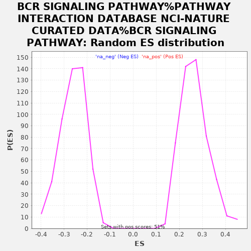

| | | Dataset | rankedList |
| Phenotype | NoPhenotypeAvailable |
| Upregulated in class | na_neg |
| GeneSet | BCR SIGNALING PATHWAY%PATHWAY INTERACTION DATABASE NCI-NATURE CURATED DATA%BCR SIGNALING PATHWAY |
| Enrichment Score (ES) | -0.6816373 |
| Normalized Enrichment Score (NES) | -2.6213608 |
| Nominal p-value | 0.0 |
| FDR q-value | 0.0 |
| FWER p-Value | 0.0 |
Table: GSEA Results Summary
 Fig 1: Enrichment plot: BCR SIGNALING PATHWAY%PATHWAY INTERACTION DATABASE NCI-NATURE CURATED DATA%BCR SIGNALING PATHWAY
Fig 1: Enrichment plot: BCR SIGNALING PATHWAY%PATHWAY INTERACTION DATABASE NCI-NATURE CURATED DATA%BCR SIGNALING PATHWAY
Profile of the Running ES Score & Positions of GeneSet Members on the Rank Ordered List
| PROBE | GENE SYMBOL | GENE_TITLE | RANK IN GENE LIST | RANK METRIC SCORE | RUNNING ES | CORE ENRICHMENT | | 1 | HRAS | | | 3678 | 0.113 | -0.1831 | No |
| 2 | MAPK1 | | | 6325 | 0.057 | -0.3167 | No |
| 3 | RAC1 | | | 6771 | 0.049 | -0.3362 | No |
| 4 | ELK1 | | | 7209 | 0.040 | -0.3560 | No |
| 5 | JUN | | | 7506 | 0.035 | -0.3688 | No |
| 6 | PPP3CB | | | 7868 | 0.028 | -0.3855 | No |
| 7 | LYN | | | 8170 | 0.023 | -0.3995 | No |
| 8 | FOS | | | 8931 | 0.008 | -0.4385 | No |
| 9 | BCL10 | | | 8947 | 0.008 | -0.4387 | No |
| 10 | SHC1 | | | 8967 | 0.007 | -0.4391 | No |
| 11 | MAPK8 | | | 9414 | -0.001 | -0.4623 | No |
| 12 | CALM3 | | | 9463 | -0.002 | -0.4647 | No |
| 13 | IKBKG | | | 9747 | -0.007 | -0.4788 | No |
| 14 | MAP3K7 | | | 9808 | -0.009 | -0.4813 | No |
| 15 | NFKBIB | | | 9984 | -0.012 | -0.4895 | No |
| 16 | CHUK | | | 10124 | -0.014 | -0.4957 | No |
| 17 | PTEN | | | 10429 | -0.021 | -0.5100 | No |
| 18 | PTPRC | | | 10513 | -0.022 | -0.5127 | No |
| 19 | PIK3CA | | | 10627 | -0.024 | -0.5167 | No |
| 20 | CAMK2G | | | 10722 | -0.026 | -0.5197 | No |
| 21 | DOK1 | | | 11610 | -0.044 | -0.5626 | No |
| 22 | MAP2K1 | | | 11714 | -0.046 | -0.5645 | No |
| 23 | GRB2 | | | 12195 | -0.057 | -0.5852 | No |
| 24 | CSK | | | 12681 | -0.068 | -0.6054 | No |
| 25 | PPP3CA | | | 12826 | -0.071 | -0.6075 | No |
| 26 | RELA | | | 12875 | -0.072 | -0.6046 | No |
| 27 | MAPK3 | | | 13207 | -0.081 | -0.6158 | No |
| 28 | CALM1 | | | 13759 | -0.093 | -0.6375 | No |
| 29 | PTPN6 | | | 13820 | -0.095 | -0.6335 | No |
| 30 | NFKBIA | | | 13821 | -0.095 | -0.6264 | No |
| 31 | AKT1 | | | 13892 | -0.096 | -0.6229 | No |
| 32 | SOS1 | | | 14283 | -0.106 | -0.6353 | No |
| 33 | POU2F2 | | | 14391 | -0.108 | -0.6327 | No |
| 34 | MAPK14 | | | 14718 | -0.116 | -0.6410 | No |
| 35 | DAPP1 | | | 14807 | -0.118 | -0.6367 | No |
| 36 | NFKB1 | | | 14853 | -0.119 | -0.6301 | No |
| 37 | PLCG2 | | | 15147 | -0.128 | -0.6358 | No |
| 38 | BCL2A1 | | | 15397 | -0.134 | -0.6387 | No |
| 39 | PAG1 | | | 15492 | -0.136 | -0.6334 | No |
| 40 | RASA1 | | | 15857 | -0.147 | -0.6413 | No |
| 41 | MAP4K1 | | | 16176 | -0.156 | -0.6462 | No |
| 42 | PPP3CC | | | 16765 | -0.177 | -0.6635 | No |
| 43 | CARD11 | | | 17114 | -0.191 | -0.6673 | Yes |
| 44 | SYK | | | 17238 | -0.196 | -0.6591 | Yes |
| 45 | PIK3R1 | | | 17241 | -0.196 | -0.6445 | Yes |
| 46 | BTK | | | 17428 | -0.204 | -0.6389 | Yes |
| 47 | MAP3K1 | | | 17466 | -0.205 | -0.6254 | Yes |
| 48 | ETS1 | | | 17522 | -0.207 | -0.6128 | Yes |
| 49 | FCGR2B | | | 17583 | -0.210 | -0.6001 | Yes |
| 50 | IKBKB | | | 17632 | -0.212 | -0.5867 | Yes |
| 51 | RAF1 | | | 17860 | -0.223 | -0.5818 | Yes |
| 52 | TRAF6 | | | 17969 | -0.229 | -0.5702 | Yes |
| 53 | IBTK | | | 18015 | -0.232 | -0.5551 | Yes |
| 54 | NFATC1 | | | 18050 | -0.234 | -0.5394 | Yes |
| 55 | SH3BP5 | | | 18371 | -0.258 | -0.5367 | Yes |
| 56 | MALT1 | | | 18675 | -0.289 | -0.5308 | Yes |
| 57 | CD19 | | | 18902 | -0.328 | -0.5180 | Yes |
| 58 | VAV2 | | | 19152 | -0.446 | -0.4975 | Yes |
| 59 | PDPK1 | | | 19179 | -0.529 | -0.4592 | Yes |
| 60 | CD79B | | | 19210 | -0.700 | -0.4083 | Yes |
| 61 | CD72 | | | 19214 | -0.731 | -0.3536 | Yes |
| 62 | BLNK | | | 19217 | -0.770 | -0.2960 | Yes |
| 63 | CD22 | | | 19256 | -1.910 | -0.1548 | Yes |
| 64 | CD79A | | | 19257 | -2.065 | 0.0001 | Yes |
Table: GSEA details [plain text format]

Fig 2: BCR SIGNALING PATHWAY%PATHWAY INTERACTION DATABASE NCI-NATURE CURATED DATA%BCR SIGNALING PATHWAY: Random ES distribution
Gene set null distribution of ES for BCR SIGNALING PATHWAY%PATHWAY INTERACTION DATABASE NCI-NATURE CURATED DATA%BCR SIGNALING PATHWAY